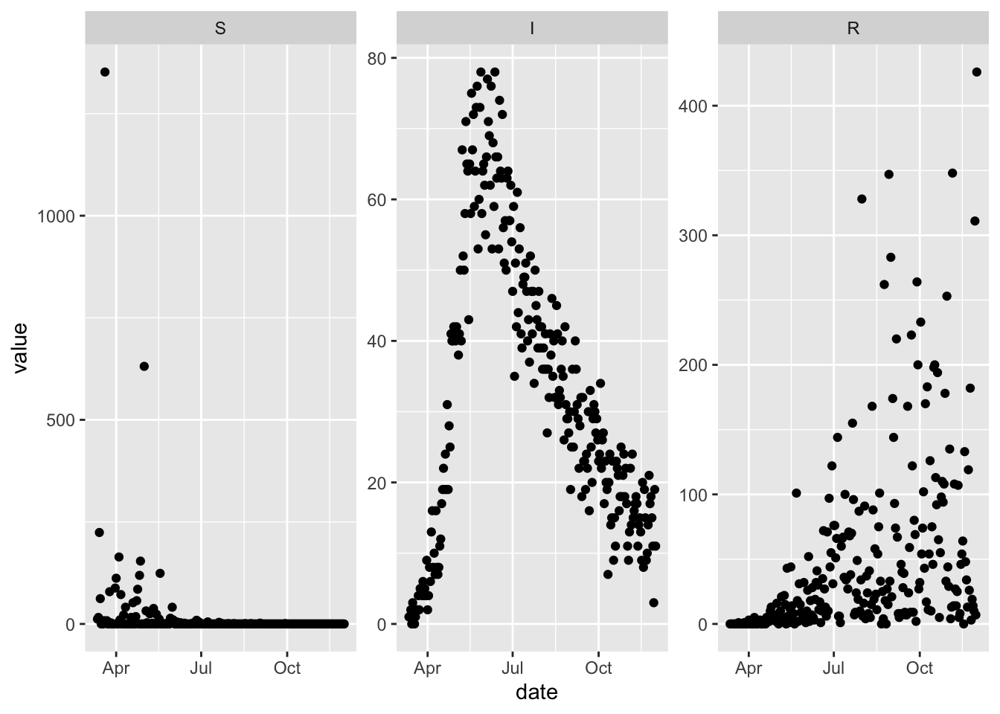
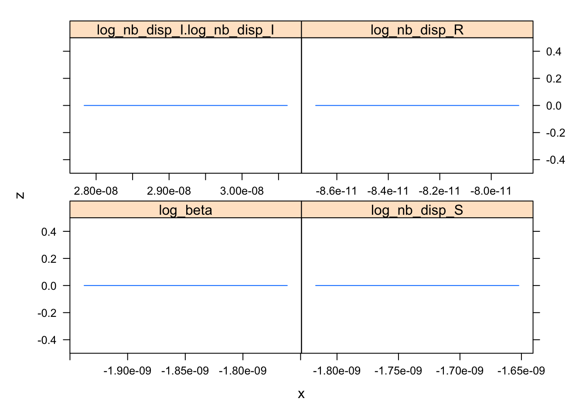

6 Convergence
In the last chapter we showed how to fit a simple SIR model to data, and things went relatively smoothly. Now we modify the fitting problem just slightly to illustrate how things can get more challenging pretty quickly. In particular we simulate all three state variables and give them different levels of observation error by specifying different values for the negative binomial dispersion parameter.
set.seed(1L)
more_noisy_data = (sir_with_obs_err
%>% update_params(c(
nb_disp_S = 0.1,
nb_disp_I = 1e4,
nb_disp_R = 1
))
%>% simulation_history(include_initial_date = FALSE, obs_error = TRUE)
%>% select(-S_to_I)
%>% pivot_longer(-Date, names_to = "var", values_to = "value")
%>% mutate(var = factor(var, topological_sort(sir)))
%>% rename(date = Date)
)
(ggplot(more_noisy_data)
+ facet_wrap(~var, scales = 'free')
+ geom_point(aes(date, value))
)
With these new simulated data we update the flexmodel object that we were previously using for calibration with the more challenging noisy data. Note also that we declare more dispersion parameters to be optimized, because the data now include all three compartments.
sir_harder_to_calibrate = (sir_to_calibrate
%>% reset_error_dist
%>% update_observed(more_noisy_data)
%>% update_opt_params(
log_beta ~ log_flat(0),
log_nb_disp_S ~ log_flat(0),
log_nb_disp_I ~ log_flat(0),
log_nb_disp_R ~ log_flat(0)
)
)Fitting this model using the defaults results in the following errors from the optimizer.
## Error in optim(par = c(log_beta = 0, log_nb_disp_S = 0, log_nb_disp_I = 0, :
## initial value in 'vmmin' is not finite## [1] "Error in optim(par = c(log_beta = 0, log_nb_disp_S = 0, log_nb_disp_I = 0, : \n initial value in 'vmmin' is not finite\n"
## attr(,"class")
## [1] "try-error"
## attr(,"condition")
## <simpleError in optim(par = c(log_beta = 0, log_nb_disp_S = 0, log_nb_disp_I = 0, log_nb_disp_R = 0), fn = function (p) { if (browse_obj) browser() l <- relist2(p, template) names(p) <- nstart[order(oo)] l[nfix] <- fixed if (vecpar) { l <- namedrop(l[nfull]) l <- unlist(l) args <- list(l) args <- c(list(l), args.in.data) } else { args <- c(l, args.in.data) } if (namedrop_args) args <- namedrop(args) do.call("minuslogl", args)}, method = "BFGS", hessian = FALSE, gr = function (p) { if (browse_obj) browser() l <- relist2(p, template) names(p) <- nstart[order(oo)] l[nfix] <- fixed if (vecpar) { l <- namedrop(l[nfull]) l <- unlist(l) args <- list(l) args <- c(list(l), args.in.data) } else { args <- c(l, args.in.data) } v <- do.call("gr", args) if (is.null(names(v))) { if (length(v) == length(l) && !is.null(tt <- names(l))) { vnames <- tt } else if (length(v) == length(p) && !is.null(tt <- names(p))) { vnames <- tt } else if (!is.null(tt <- parnames(minuslogl))) { vnames <- tt } else vnames <- names(formals(minuslogl)) if (length(vnames) != length(v)) stop("name/length mismatch in gradient function") names(v) <- vnames } return(v[!names(v) %in% nfix])}, control = list(), lower = -Inf, upper = Inf): initial value in 'vmmin' is not finite>## Warning in nlminb(start = start, objective = objectivefunction, hessian =
## NULL, : NA/NaN function evaluation
## Warning in nlminb(start = start, objective = objectivefunction, hessian =
## NULL, : NA/NaN function evaluation
## Warning in nlminb(start = start, objective = objectivefunction, hessian =
## NULL, : NA/NaN function evaluation
## Warning in nlminb(start = start, objective = objectivefunction, hessian =
## NULL, : NA/NaN function evaluation
## Warning in nlminb(start = start, objective = objectivefunction, hessian =
## NULL, : NA/NaN function evaluation
## Warning in nlminb(start = start, objective = objectivefunction, hessian =
## NULL, : NA/NaN function evaluation
## Warning in nlminb(start = start, objective = objectivefunction, hessian =
## NULL, : NA/NaN function evaluation## Warning in bbmle::mle2(obj_fun$fn, start_par, gr = obj_fun$gr, parnames =
## names(start_par), : couldn't invert Hessian## $par
## log_beta log_nb_disp_S log_nb_disp_I log_nb_disp_R
## 0 0 0 0
##
## $objective
## [1] Inf
##
## $convergence
## [1] 0
##
## $iterations
## [1] 1
##
## $evaluations
## function gradient
## 2 4
##
## $message
## [1] "X-convergence (3)"
##
## $hessian
## [,1] [,2] [,3] [,4]
## [1,] NaN NaN NaN NaN
## [2,] NaN NaN NaN NaN
## [3,] 13.64742 0 102.8402 0.0000
## [4,] 13.27857 0 0.0000 189.5047
##
## $maxgrad
## [1] NaN
##
## $eratio
## [1] NAsir_hard_attempt_3 = (sir_harder_to_calibrate
%>% update_opt_params(
log_beta ~ log_flat(-1),
log_nb_disp_S ~ log_flat(0),
log_nb_disp_I ~ log_flat(0),
log_nb_disp_R ~ log_flat(0)
)
%>% calibrate_flexmodel
)
convergence_info(sir_hard_attempt_3)## $par
## log_beta log_nb_disp_S log_nb_disp_I log_nb_disp_R
## -2.3075737 -2.1004227 9.0642536 -0.1010736
##
## $value
## [1] 2294.749
##
## $counts
## function gradient
## 75 28
##
## $convergence
## [1] 0
##
## $message
## NULL
##
## $hessian
## [,1] [,2] [,3] [,4]
## [1,] 1.002927e+04 -19.31947 -0.056975984 -5.624261
## [2,] -1.931947e+01 39.92026 0.000000000 0.000000
## [3,] -5.696362e-02 0.00000 0.003400036 0.000000
## [4,] -5.624261e+00 0.00000 0.000000000 129.828358
##
## $maxgrad
## [1] 0.005206376
##
## $eratio
## [1] 3.389777e-07## Profiling has found a better solution,so original fit had not converged:## (new deviance=3633, old deviance=4589, diff=-956.8)## Returning better fit ...## $par
## log_beta log_nb_disp_S log_nb_disp_R
## -2.2471694 -2.1075732 -0.1006872
##
## $value
## [1] 1816.368
##
## $counts
## function gradient
## 84 9
##
## $convergence
## [1] 0
##
## $message
## NULL
##
## $hessian
## [,1] [,2] [,3]
## [1,] NA NA NA
## [2,] NA NA NA
## [3,] NA NA NA
##
## $maxgrad
## [1] 574.4543## log_beta
## log_nb_disp_S
## log_nb_disp_I.log_nb_disp_I
## log_nb_disp_R
TODO: plot profiles and slices
TODO: add ability to use auto-diff hessian with bbmle (currently not even possible with optimizer = ‘nlminb’ because this is a bbmle::mle2 argument and bbmle::mle2 doesn’t allow use-supplied hessian functions, at least by default)
TODO: add functionality to the package for updating starting values in a more convenient manner than update_opt_params. maybe even a way to modify the starting values based on a vector giving the argument to the objective function. this would allow one to chain together optimization runs.